DAMEN Yachting — Explorer Series
60m / 80m / 105m 三级尺寸极地破冰豪华探险艇
征服地球上最遥远的海域
Series Overview
DAMEN Xplorer 系列覆盖 60 米至 105 米，每一款都承载着 DAMEN 百年造船工艺与极地探险基因，为不同规模的探险旅程量身打造。
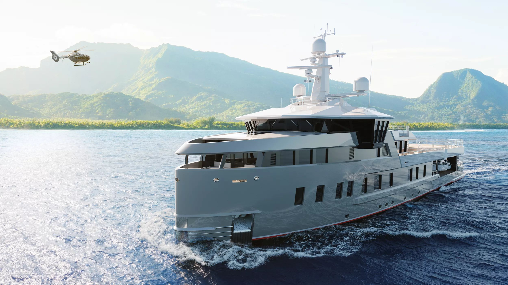
灵活远征，全海域适航
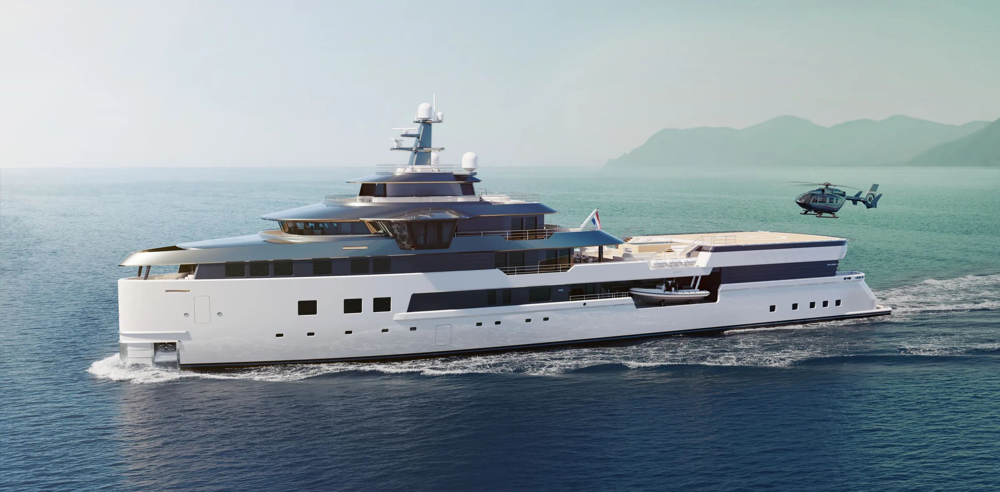
大型远征旗舰，极致舒适体验
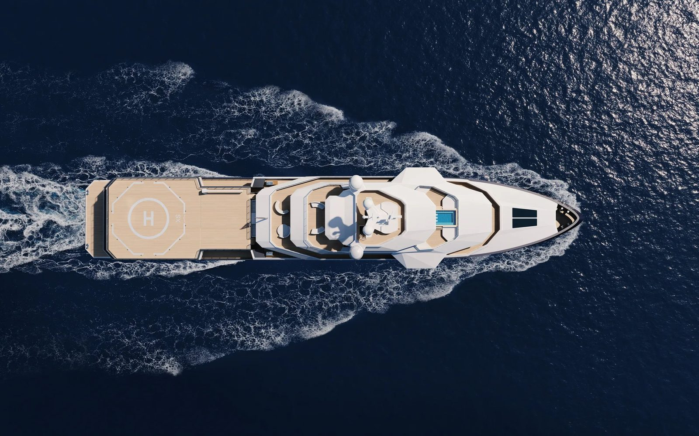
超级旗舰，极地巨无霸
Video Showcase
在极地冰川与热带海岛之间，体验 DAMEN Xplorer 系列的真实航行魅力。
Core Technology
每一艘 DAMEN Xplorer 均标配以下核心技术资产，确保在任何海域都能从容应对。
全球全海域航行能力，从热带海岛到南北极冰区，ICE Class 冰级强化船体，无惧极端环境。
40 天海上无补给远洋巡航，最高 8000 海里续航里程，深入全球最偏远海域无需靠港。
混合动力系统，静音电动模式实现无噪声浅海巡航，零排放进入生态敏感水域，环保先锋。
标配直升机停机坪、大型潜水器收纳舱、水上玩具车库，为极致探险提供全方位硬件支持。
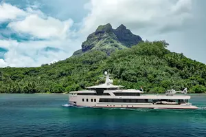
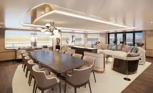
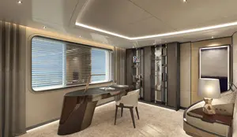
灵活远征 · 全海域适航
Xplorer 60 是 DAMEN 探险游艇系列的入门旗舰，兼具灵活性与远洋能力。60.1 米的精干船体可深入狭窄航道与隐秘锚地，混动动力系统确保在生态敏感水域实现静音零排放巡航。适合追求独立探索精神的小型团队与家庭。
| 总长 | 60.1m |
| 型宽 | 11.0m |
| 满载吃水 | 3.60m |
| 总吨 GT | 1160 |
| 最大航速 | 14.5 节 |
| 巡航续航 | 5000 海里 @11.5 节 |
| 载客上限 | 12 人 |
| 船员配置 | 14 + 船长 |
| 核心配置 | 混动动力、小型停机坪 |
舰桥甲板：驾驶台、船长舱、通讯导航设备区。
上层休闲甲板：户外餐厅、阳光浴区、小型泳池及吧台。
主客舱甲板：4 间 VIP 客舱 + 主人套房，全景落地窗设计。
下层设备甲板：混合动力机舱、淡水处理系统、潜水器及水上玩具存储舱。
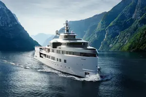
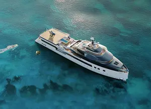
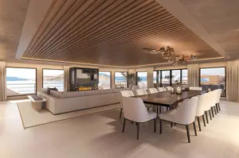
大型远征旗舰 · 极致舒适体验
Xplorer 80 将远征能力与超级游艇的奢华舒适融为一体。80 米船体配备双直升机停机坪与超大户外泳池，可容纳 18 位宾客与 17 名船员。6000 海里的续航里程足以完成一次完整的跨大洋探险而无需中途补给。
| 总长 | 80m |
| 型宽 | 14.25m |
| 满载吃水 | 3.75m |
| 总吨 GT | 2900 |
| 最大航速 | 14.5 节 |
| 巡航续航 | 6000 海里 @12 节 |
| 载客上限 | 18 人 |
| 船员配置 | 16 + 船长 |
| 核心配置 | 双停机坪、超大户外泳池 |
舰桥甲板：驾驶台、双直升机停机坪及机库、船长套房。
上层休闲甲板：超大无边泳池、户外影院、烧烤吧、阳光甲板。
主客舱甲板：6 间豪华客舱 + 主人套房，含步入式衣帽间与水疗浴室。
下层设备甲板：双混动主机舱、潜水器舱、宽敞的水上玩具艇库、健身房与水疗中心。
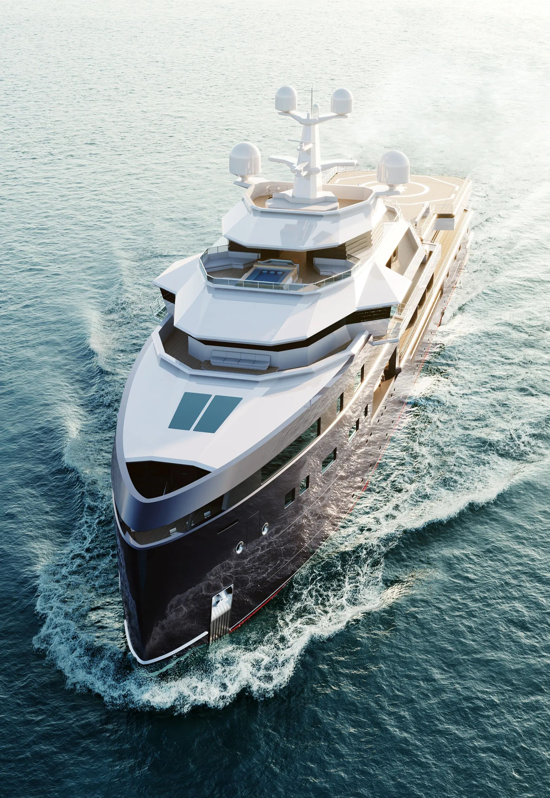
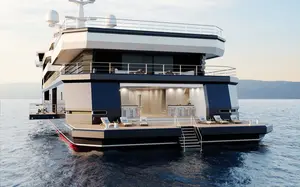
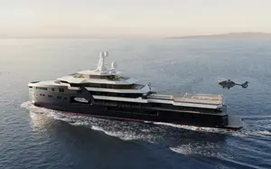
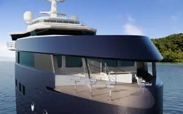
超级旗舰 · 极地巨无霸
Xplorer 105 是 DAMEN 探险游艇系列的终极旗舰。105 米的巨型船体可搭载两层直升机停机坪及一艘独立潜水艇。8000 海里的超长续航使其足以完成南极环航或西北航道穿越。24 位宾客与 29 名船员的配置，确保每位登船者都能享受极致的探险旅程。
| 总长 | 105m |
| 型宽 | 17.0m |
| 满载吃水 | 5.00m |
| 总吨 GT | 6500 |
| 最大航速 | 16 节 |
| 巡航续航 | 8000 海里 @12 节 |
| 载客上限 | 24 人 |
| 船员配置 | 28 + 船长 |
| 核心配置 | 双层停机坪、独立潜水艇舱 |
舰桥甲板：全景驾驶台、双层直升机平台及机库、探险指挥中心。
上层休闲甲板：大型无边泳池、户外餐饮区、全景酒吧、直升机乘客转运区。
主客舱甲板：8 间豪华客舱 + 两间主人套房（含私人露台及按摩浴池）。
下层设备甲板：独立的潜水艇存储与发射舱、大型水上玩具艇库、影院、水疗中心、医疗室。
Interior Customization
携手全球顶尖游艇设计工作室，从风格、材质到布局，100% 个性化打造您的海上家园。
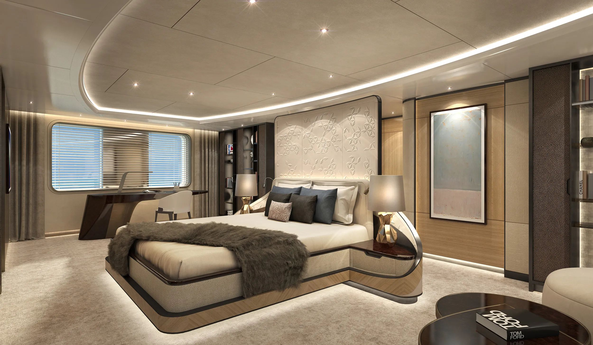
以经典的英伦奢华与现代简约风格的融合著称，擅长使用高档木材、大理石与定制家具打造永不过时的海上空间。
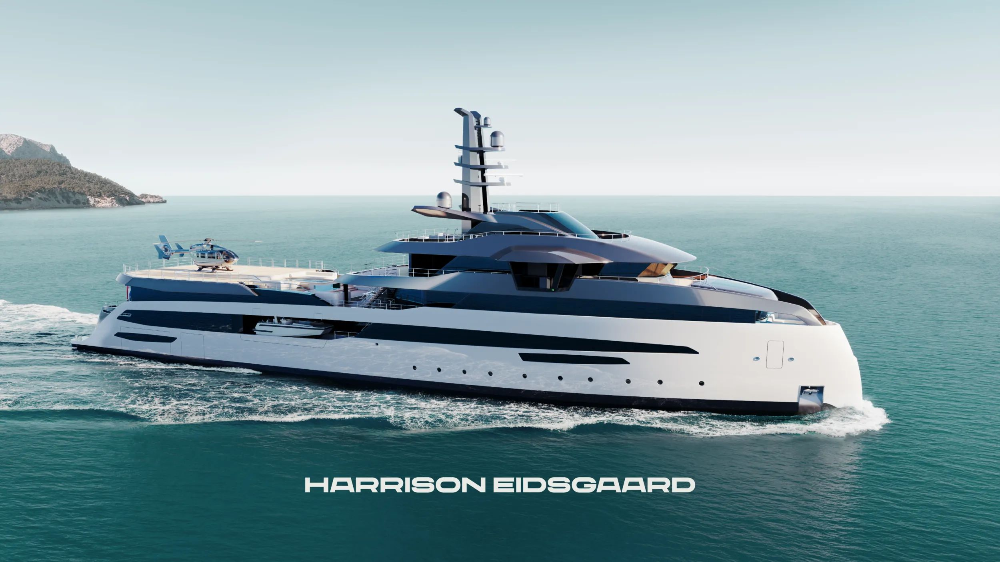
北欧设计美学的代表，强调自然光、纯净线条与实用功能性的完美统一，为探险游艇创造通透而温馨的居住体验。
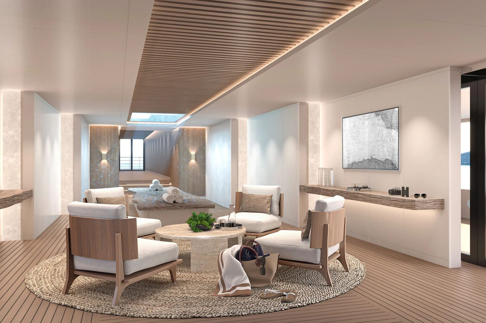
顶级游艇与航空内饰设计先锋，以大胆的色彩、独特的材质组合和丰富的艺术元素，打造充满个性和故事性的海上空间。
全船内饰可 100% 个性化定制 — 从实木选材到智能家居系统，从艺术品陈设到影音娱乐，每一处细节皆可量身打造。
Real Voyages
DAMEN Xplorer 系列已征服全球最富挑战性的航线，以下为经典航行案例。
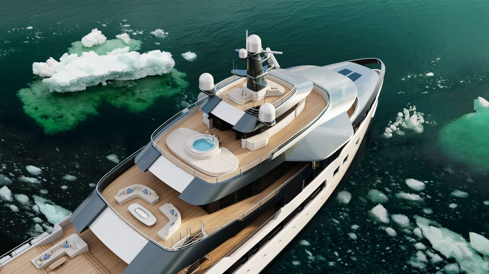
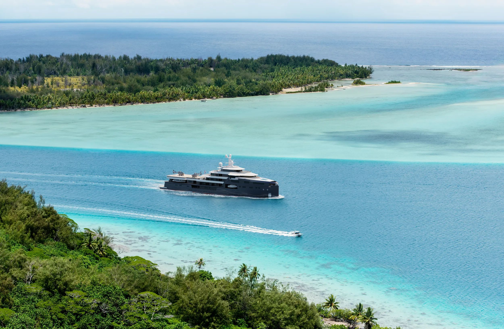
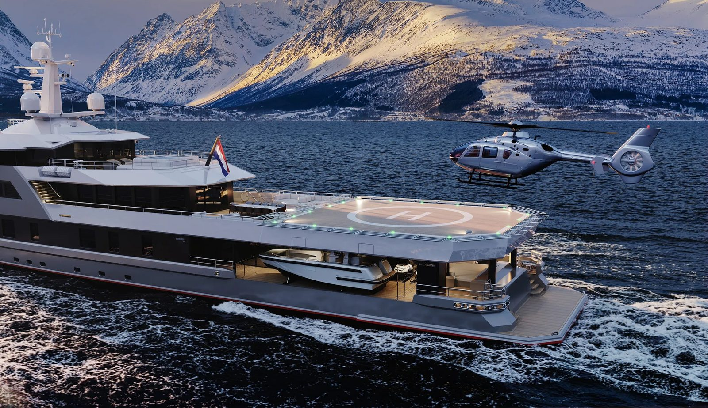
Get in Touch
预约实地看艇或获取详细资料，我们的探险游艇专家将在 24 小时内与您联系。